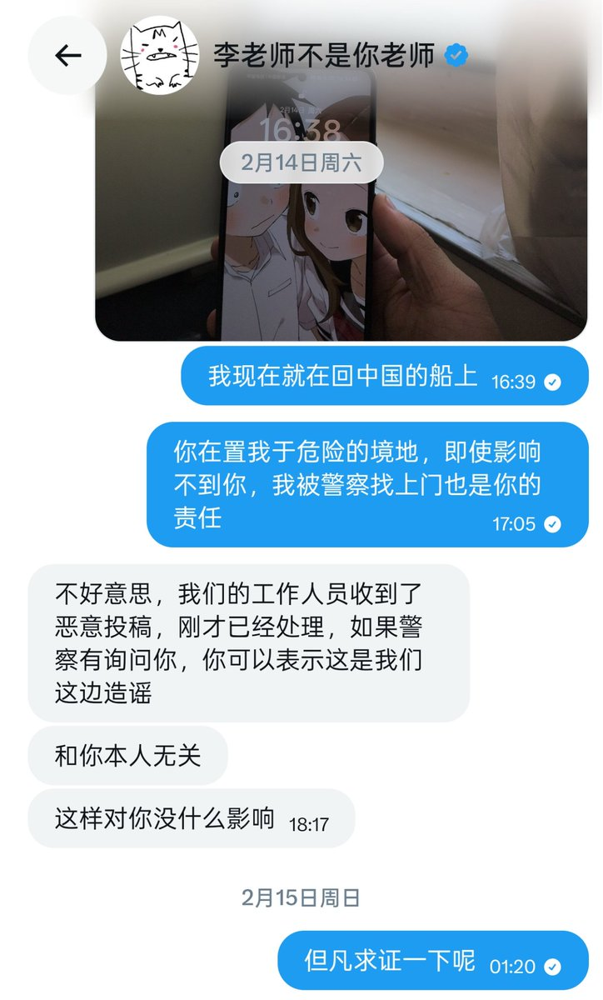

星野ふじ
@hoshinofujivy
@suishoucrystal 其实我最在意的是，你居然没在国内....

水晶クリスタル | Bird🕊️
@suishoucrystal
本人 水晶クリスタル
今年2月被李老师造过谣招来危险，
今年7月骂多伦多方脸被他挂，
去年也和磊哥互喷，吐槽过圆脸
被反贼骂粉红，被粉红骂殖畜
整个中推找不到比我更魔幻的人。
还好我不在中国🇨🇳，不然就惨了。 https://t.co/pW9MQ2ENDv